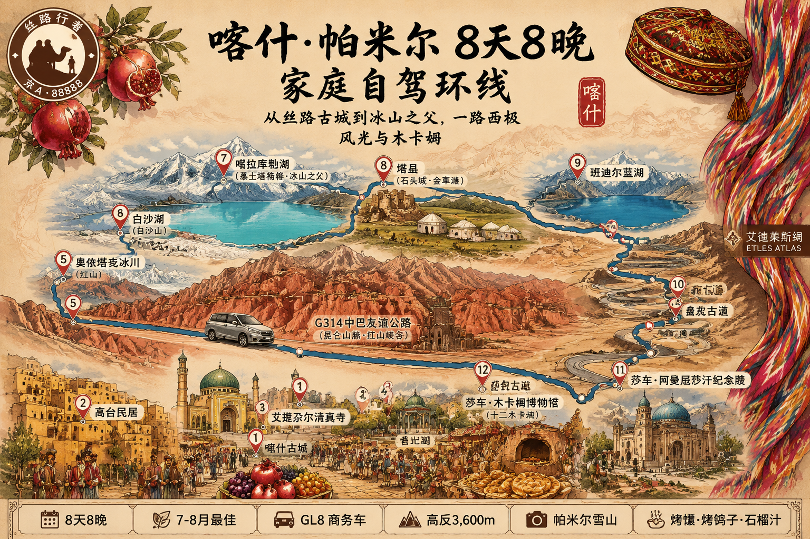

Day1 下午 父母+2娃需到古城警务站 / 边境管理支队办证点刷脸免费办
预留 2h 安检+候机
南航 · 5h40m · 含正餐
取 GL8，验车+拍现有划痕，检查儿童座椅（自带或租），加满油
约 30min · 凌霜居双床房 × 2 · 已付 ¥1,722
办证地点：古城警务站/边境管理支队办证点，刷脸免费，前往地填"塔什库尔干塔吉克自治县"，监护人代办孩子
烤鸽子 · 石榴汁 · 冰蕊酸奶粽子（孩子爱）
📌 儿童少辣，吃完逛古城夜景，22:00 才日落
📍 丝路印象（古城景区内，近东门）
🛏️ 凌霜居双床房 × 2（梦百合零压床） · 带停车
新疆生物钟≈9:00，不算早
荒地乡 · 314国道旁 · GL8 约 30min（25–30元打车也可）
免费 · 7/19 正周日，开市 · 现场红柳烤肉/烤包子午餐
色满路与解放北路 · 清炖乳鸽 ¥25–30 + 鸽子汤续碗
避开正午高温
古城东门对面 · ¥199–338/人 · 约 100min
📌 周二–周日有 16:00 / 21:30 两场（21:30 太晚不建议）
库如克铁热克二巷 · 过油肉拌面 ¥15 · 点单说"小孩吃、不要辣"
随身：氧气瓶 + 干粮水 + 雨具
海拔 2,800–3,000m · G314 约 120km/2h · 门票 ¥45+区间 ¥6
📌 全家适宜现代冰川，可触摸蓝冰，约 2h
白沙湖无商业设施，提前买干粮
海拔 3,300m · G314 约 80km/1.5h · 北岸免费 / 东/南岸 ¥40 通用
📌 风大，湖边别久留；有云遮就普通青海
~30km / 0.5h · 门票 ¥90/人(原 MD ¥50 偏低) · 最高点，1.5h 内离开
📌 当天下雨概率高，慕士塔格峰易被云遮，倒影要运气
特享双床房 × 2（弥散式供氧）· 已付 ¥1,588
📌 开供氧！ 让孩子老人早睡
联票 ¥40+区间 ¥11 · 22 点才日落，高原 golden hour 1.5h
约 70km / 1.5h · 中巴友谊公路南段
📌 仅在公路/桥上停车拍摄（5月公告禁止进山徒步）
7 月普通丰水蓝湖（土星环仅 3–4 月）；非景区，注意落石/塌方风险
单行 36km / 限速 30 / 2.5–3h · 10:00–19:00 开放 · 18:30 清场
~130km / 2.5–3h · 慕士塔格峰远观，喀拉库勒可补拍
📌 开供氧 · 晚餐牦牛肉火锅（清淡款）
~300km / 5–6h · 中巴友谊公路 G314 北段
若 Day3 遇雨没拍好湖景，今天可重点补
豪华双床房 × 2 · 智能客控 · 已付 ¥1,300
阿热亚路与恰萨路 · 缸子肉 ¥20–25 · 点单说"小孩吃、肉再煮烂点"
塔吾古孜路 17 号 · 羊肉抓饭 ¥30 + 薄皮包子 ¥3
室内避暑 1.5h · 亲子捏陶
距古城 6–7km · 免费 · 中国新疆民族乐器博物馆(83种乐器可试奏可手作)
天山西路 28 号 · 免费 · 微信"喀什地区博物馆服务号"预约
📌 周一闭馆（7/23 周四 OK）· 蹭人工讲解 2–3h
¥40（官方/美团提前购比现场便宜） · 60–64 半价 · 65+ 免
伽师瓜正季 · 石榴汁 · 买干果（建议今晚上完成）
只做早午餐 9–12 点 · 抓饭 ¥30 · 薄皮包子 ¥3 · 自制酸奶 ¥5
清炖乳鸽 ¥25–30 · 鸽子汤免费续 · 老人小孩最宜
缸子肉 ¥20–25 · 窝窝馕 ¥3 · 让孩子吃可要求"再煮一下"
过油肉拌面 ¥15 · 务必"小孩吃、不要辣"
玫瑰花馕 ¥3 · 当伴手礼，别当正餐
冰糖茯茶招牌 · 当文化体验不吃饭 · 二楼茶座
195km / 2.6h · 莎车不需边防证
烤鸽子/烤包子/羊肉汤（不辣）
¥15 · 10:00–19:30 · 蓝顶王陵
免费 · 陶罐巷/彩绘木门出片
室内避暑 · 十二木卡姆主题展
老城文化中心 · ¥25–30/人 · 约 1h · 17:00 场最稳
📌 不指定座位，提前半小时到 · 这趟最大独特看点
特制茶 + 酸奶粽子 + 维族弹唱（百年老店）
高级双床房 × 2 · 已付 ¥450 · 带停车
192km / 2.6h · 沿途服务区厕所
推荐艾尼纯羊烤肉店（古城北）· 缸子肉 ¥20 · 红柳烤肉 ¥10
约 20–30min · 市区→徕宁 T2
还车柜台在 T2 到大厅附近 · 留 3h 安检+候机
📌 行李直挂乌鲁木齐 · 7/26 00:20 到京 ⚠️ 提前安排接机
☐ 你的边防证已线上办好（无需再做）
☐ Day1 抵达下午：5人边防证（古城警务站，刷脸免费）
☐ 出前 7 天：喀什博物馆预约（微信"喀什地区博物馆服务号"）
☐ 出前 3 天：香妃园门票（官方公众号/美团）
☐ 携程购：十二木卡姆演出（莎车）¥25–30
☐ GL8 验车+拍现有划痕（提车时）
☐ 氧气瓶×2（随车+房间备用）
☐ 儿童座椅（GL8 可租或自带）
☐ 接机安排（7/26 00:20 到京 ⚠️）